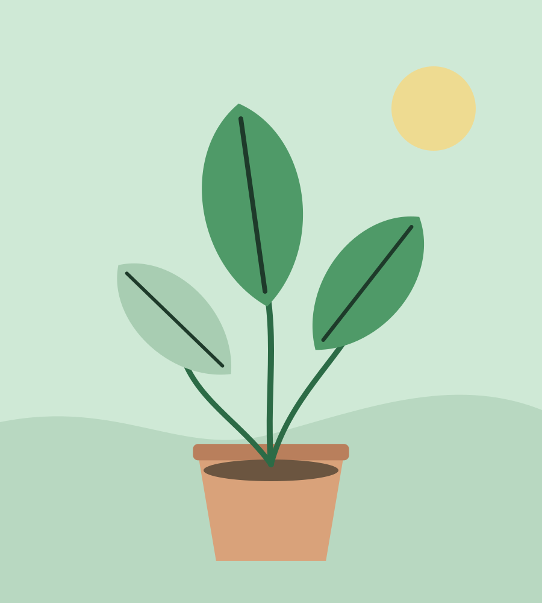

Component
Flare
Flare is everything a template adds beyond the contract. Breathe's is small and moves slowly: a frond that sways in a breeze, the mint pot it stands in, a row of big numbers for what an app has to say at a glance, and one italic line. Each sits inside a <div class="breathe-flare"> so a template swap can strip it. The sage wash behind the page is not flare; it is a token on <body> and needs no markup.
The frond
The signature, and the right half of the overview's hero. An inline SVG: one stem path and six leaves, each in its own <g>. The group breathe-sways rotates from the base of the picture over --breathe-breath (seven seconds) by --breathe-sway (2.4 degrees) and back; the left and right leaves rotate from their own bases a little behind it, in opposite phase, so the plant moves like one thing in slow air. Colours are currentColor (the leaf token) and --breathe-leaf-light; draw your own plant with the same class names and it will move the same way.
<div class="breathe-flare">
<div class="breathe-pot">
<svg class="breathe-frond" viewBox="0 0 300 330" aria-hidden="true">
<g class="breathe-sways">
<path d="M150 330C149 300 152 240 149 180C147 130 148 100 146 78" fill="none" stroke-width="5" stroke-linecap="round" style="stroke: var(--breathe-stem)"/>
<g class="breathe-leaf-l"><path d="M149 300C110 300 70 280 60 235C100 232 140 262 149 300Z" fill="currentColor"/></g>
<g class="breathe-leaf-r"><path d="M151 260C190 258 230 236 240 190C200 190 162 222 151 260Z" style="fill: var(--breathe-leaf-light)"/></g>
<g class="breathe-leaf-l"><path d="M148 215C105 214 66 190 58 145C98 146 138 178 148 215Z" style="fill: var(--breathe-leaf-light)"/></g>
<g class="breathe-leaf-r"><path d="M150 170C186 168 224 144 232 98C194 100 160 134 150 170Z" fill="currentColor"/></g>
<g class="breathe-leaf-l"><path d="M147 125C112 124 84 104 78 66C110 68 138 94 147 125Z" fill="currentColor"/></g>
<g class="breathe-leaf-r"><path d="M146 80C132 60 130 30 148 8C166 30 162 60 146 80Z" style="fill: var(--breathe-leaf-light)"/></g>
</g>
</svg>
</div>
</div>The rest
The pot
A mint panel with the leaf cut. It holds the frond in the hero, and on the example's plant page it holds the plant's picture, which takes the same cut. Anything you put in it sits at the bottom centre.

<div class="breathe-flare">
<div class="breathe-pot">
<img src="../../assets/hero.svg" alt="A monstera in a clay pot under a window" width="900" height="1000">
</div>
</div>Stats
What an app has to say about itself in one glance: big numbers in Manrope with small labels under them. A .row of <dl>s, one term and one value each, so the pairs stay pairs for a screen reader; the CSS puts the number first. A <small> inside the value is a unit.
- Plants
- 12
- Due today
- 2
- Next watering
- 4 days
- Streak
- 31 days
<div class="breathe-flare">
<div class="row breathe-stats">
<dl><dt>Plants</dt><dd>12</dd></dl>
<dl><dt>Due today</dt><dd>2</dd></dl>
<dl><dt>Next watering</dt><dd>4 <small>days</small></dd></dl>
<dl><dt>Streak</dt><dd>31 <small>days</small></dd></dl>
</div>
</div>Aside
One line in Instrument Serif italic, in the accent, for a sentence that deserves to be said slowly. The same face sets the one <em> a heading is allowed; use it for nothing else.
A plant does not need a reminder. You do.
<div class="breathe-flare">
<p class="breathe-aside">A plant does not need a reminder. You do.</p>
</div>Variants of contract components
Breathe also gives five contract components a variant of its own. They are ordinary components with one more class, so they need no wrapper, and each is documented on its component's page.
| Class | On | What it makes |
|---|---|---|
.breathe-leaf | .card, .fifty-fifty | The picture takes the leaf cut and sits in from the edge |
.breathe-stem | .stack of cards | A sequence down one thin stem; .breathe-now and .breathe-done mark the cards |
.breathe-quiet | .btn | A text button with an arrow, for the second action |
.breathe-mint | .badge | A filled mint pill with a dot, for the state to notice |
.breathe-week | .table-wrap | A week: a column per day, a drop per task, today tinted mint |
Classes
The rules live in css/global.css under /* == flare == */; the hero's own rules are under /* == utilities == */.
| Class | Purpose |
|---|---|
.breathe-flare | The wrapper for flare that is markup; strip it when swapping templates |
.breathe-frond | The SVG: sized to 26rem at most, coloured with --breathe-leaf |
.breathe-sways | The group that rotates from the base; the whole plant |
.breathe-leaf-l, .breathe-leaf-r | A leaf that rotates from its own base, left or right of the stem, a little behind the sway |
.breathe-pot | Mint panel with the leaf cut; contents sit at the bottom centre |
.breathe-stats | On a .row: each <dl> becomes a number over a label |
.breathe-aside | One line in the accent face |
Notes
- Every colour here is a token:
--breathe-mint,--breathe-mint-deep,--breathe-mint-ink,--breathe-stem,--breathe-leaf,--breathe-leaf-lightintheme.css. Nothing inglobal.cssnames a colour. - The frond is the only thing in the template that moves on its own.
--breathe-swayand--breathe-breathset how far and how long; underprefers-reduced-motion: reducethe animation is removed and the plant stands still. - The leaves rotate with
transform-box: fill-box, so each turns from its own base rather than the picture's corner. That needs a browser from 2023 on, which the rest of the template needs anyway. - The frond and the pot are decoration when they hold a drawing; mark the SVG
aria-hidden="true"as the example does. The stats and the aside are content and should not be. - The sage wash (
--breathe-sage-wash) is a radial gradient at the top right ofbody, documented on the theme page.